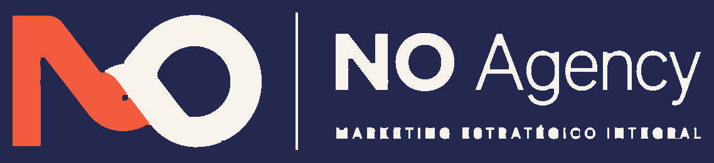
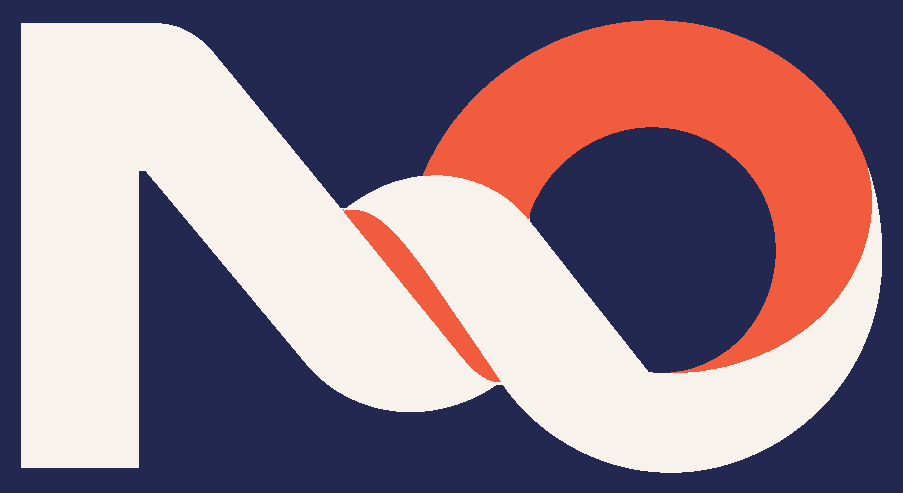
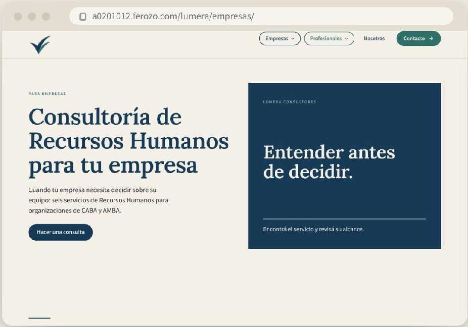
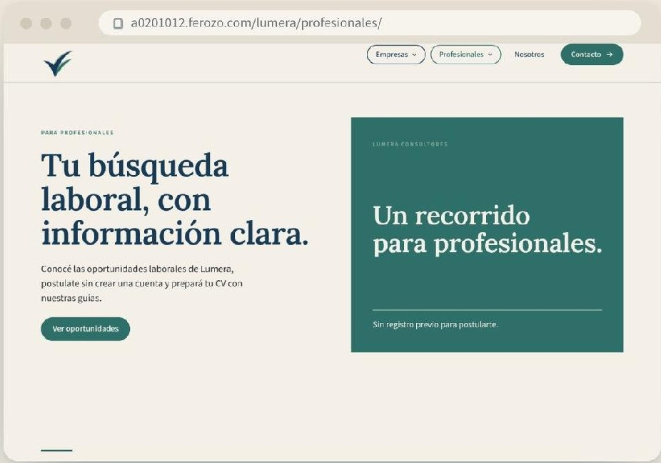
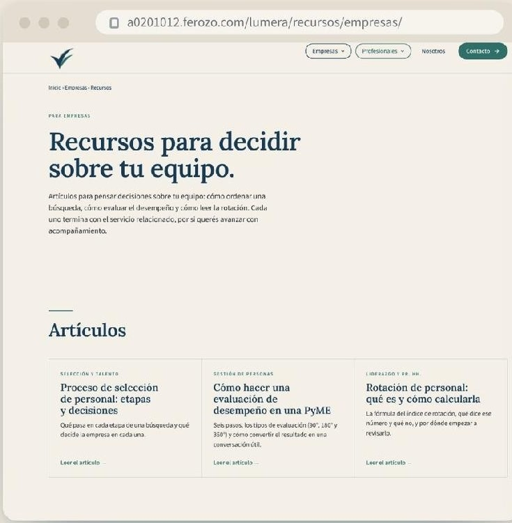
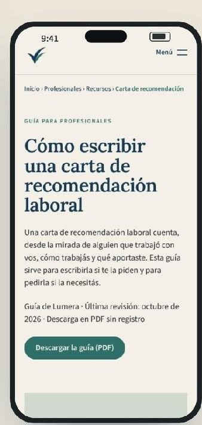
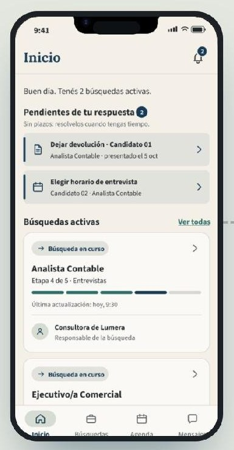
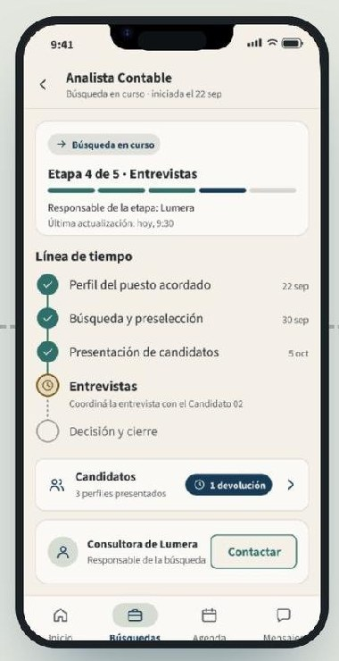
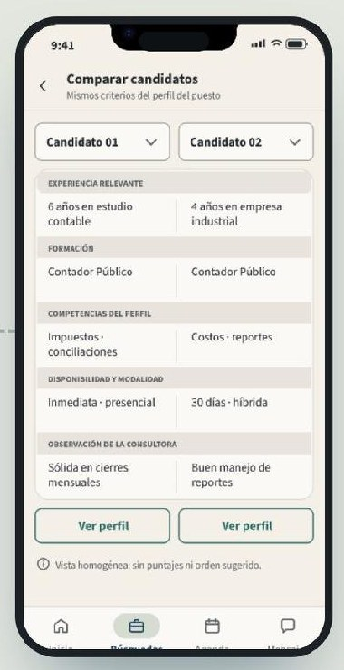

“No necesito que me expliquen qué es la gestión del talento. Necesito un jefe de servicio técnico que no se me vaya a los dos meses.”
NecesitaCubrir un puesto clave que no logra cubrir.

Lucas De Rosa · Valentino Sparano · Lucas Tolaba · Kevin Lema · Yohannis Suárez
NO Agency
Inteligencia artificial para investigar, ordenar y acelerar procesos sin perder el criterio humano que nos caracteriza.
Este es el equipo que fue parte de Lumera durante todo este proceso.

Lumera
Consultora de Recursos Humanos
Situación inicial
Diagnóstico
Presencia digital frente a los competidores relevados
Nadie explicaba el alcance de sus servicios ni cómo trata los datos de las personas: ese fue el espacio de Lumera.
Branding
Según el brief inicial del cliente
Lora y Source Sans 3

El símboloUn check de curvas ascendentes que dejó atrás el punto de la versión anterior. Ya no se lee como dos personas: expresa validación y avance, y representa por igual a los seis servicios.
El colorEl azul profundo aporta solidez y los verdes, cercanía. Sobre un fondo marfil, la marca se ve profesional y cálida a la vez, sin caer en la frialdad tecnológica.
La tipografíaLora, una serif contemporánea, da voz a los títulos y transmite trayectoria. Source Sans 3 hace cómoda la lectura en pantalla y en el celular.
Desafíos y oportunidades
Propuesta de valor
Lumera acerca criterio profesional a las empresas que deciden sobre sus personas sin el respaldo interno suficiente, y explica el porqué de cada decisión.
Buyer personas
“No necesito que me expliquen qué es la gestión del talento. Necesito un jefe de servicio técnico que no se me vaya a los dos meses.”
NecesitaCubrir un puesto clave que no logra cubrir.
“Yo sé hacer una búsqueda. Lo que no tengo son manos, y lo que contrate lo tengo que poder defender delante del gerente.”
NecesitaManos para una apertura y algo para defender ante la gerencia.
“Si no quedé, avisame. Prefiero un ‘no’ el martes antes que tres semanas mirando el mail.”
NecesitaSaber quién está del otro lado y recibir una respuesta.
Objetivos SMART · tres meses
Objetivo 1 · Branding y posicionamiento
50.000sesiones
Construir en tres meses la presencia digital de Lumera Consultores en el ecosistema de canales definido, alcanzando 50.000 sesiones acumuladas al sitio web mediante marketing de contenidos y publicidad.
Tráfico medido por separado: recorrido Empresas y recorrido Profesionales
Objetivo 2 · Captación
20leads
Generar en tres meses al menos 20 leads empresariales calificados de CABA y AMBA a través del ecosistema digital de Lumera Consultores, mediante marketing de contenidos y publicidad.
Sitio web

SEO y contenidos
proceso de selección de personal

Artículo→Servicio→Consulta
carta de recomendación laboral

Guía PDF→Oportunidades→Postulación
Redes sociales
Publicidad digital
Email marketing
Qué haceCada consulta F1 y cada postulación F2 recibe un correo con el próximo paso
IndicadorConsultas y postulaciones confirmadas
Qué haceTres plantillas con la voz de Lumera para responder a cada empresa
IndicadorK18 primer contacto en 48 horas o menos
Qué haceLos recursos para empresas ofrecen recibir novedades, con una casilla propia
IndicadorK100 suscriptores empresariales
Qué haceContenido para empresas que lleva al sitio y a la consulta
IndicadorApertura, clics, sesiones y leads del envío
Resultados · redes sociales
LecturaLinkedIn fue la red con más consultas de empresas (9). El contenido de Instagram se guarda como material de consulta y TikTok sumó 3.850 espectadores por video.
DecisiónSostener LinkedIn orgánico y revisar la frecuencia y el formato de X.
Resultados · publicidad digital
LecturaGoogle Ads capta a quien ya busca un servicio. LinkedIn Ads llegó a decisores, pero con un costo por sesión cuatro veces mayor que Google.
DecisiónGoogle Ads como canal principal de captación. La inversión de LinkedIn Ads pasa a Google y Meta Empresas.
Resultados · sitio web
52.480 sesiones por fuente · Empresas Profesionales
Empresas · de la sesión al lead
Profesionales · de la sesión a la postulación
LecturaGoogle Ads aportó 9 de los 18 leads del sitio, a USD 149 cada uno. La tasa sesión → lead del recorrido Empresas fue 0,11 %.
DecisiónGoogle Ads como canal principal de captación y más contenido orientado a empresas.
Resultados · email marketing
Confirmaciones
100 %
de las consultas F1 y de las 586 postulaciones F2
Primer contacto · K18
24 de 24
leads contactados en 48 horas o menos, con una mediana de 9 horas
Suscriptores · K100
58
empresas con consentimiento propio, desde cero
Primer envío · S11
46 %
de apertura sobre 46 correos entregados
Altas de suscriptores por mes
Primer envío con Doppler
LecturaEl email no trae tráfico: retiene. Aseguró la respuesta a cada contacto y armó una base propia; con 46 correos, la apertura todavía es una muestra chica.
DecisiónSostener el envío mensual y sumar la suscripción a más recursos para empresas.
Resultados por objetivo
Objetivo 1 · Sesiones en el sitio
52.480 de 50.000
La mitad llegó desde las redes orgánicas y una de cada cinco, desde Google.
Objetivo 2 · Leads empresariales calificados
24 de 20
13 llegaron por pauta y 11 sin inversión publicitaria.
Conclusión
Lo que construimos
Lo que aprendimos
Próximos pasos
La próxima etapa
Hoy, quien contrata una búsqueda tiene que preguntar para saber cómo avanza: 15 de 24 se enteran por otra persona. Faro le muestra cada etapa, le acerca los candidatos y le pide su devolución en el momento justo.
Propuesta de NO Agency · nombre preliminar · fuera del presupuesto actual



Inversión · tres meses
Pagos USD 2.340 · 3.710 · 1.950, uno por mes · Honorarios precio cerrado, sin cargos adicionales · No incluye CRM, remarketing, landings nuevas, envíos masivos de email ni Faro
Gracias
No trabajamos desde afuera. Nos involucramos para crecer con Lumera.
¿Preguntas?
· Enter o clic para ir · Esc para cerrar